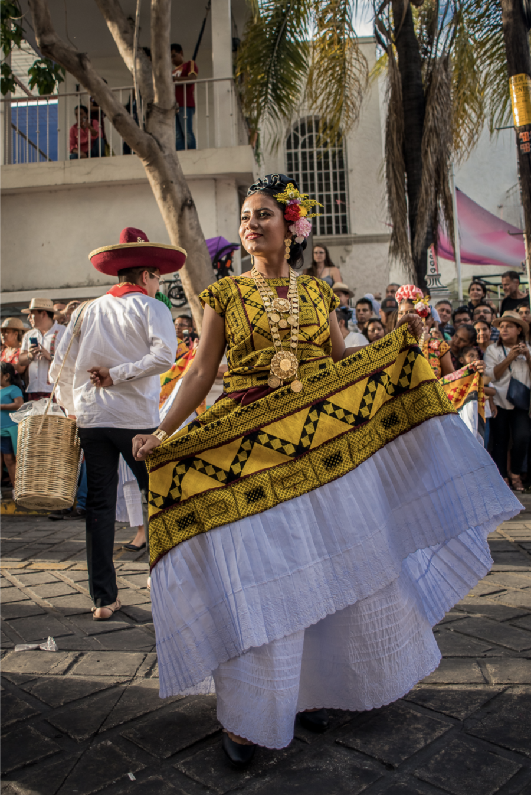

¿Qué es el traje de tehuana y por qué importa?
El traje de tehuana es mucho más que una vestimenta regional: es el símbolo viviente de la cultura zapoteca del Istmo de Tehuantepec. Su nombre proviene de Tehuantepec, ciudad vecina de Juchitán de Zaragoza, aunque hoy se usa para identificar a toda la indumentaria tradicional de las mujeres istmeñas de Oaxaca.
En Juchitán, portar el traje de tehuana es un acto de afirmación identitaria. No se trata de un disfraz folclórico ni de una pieza de museo: se lleva en bodas, velas, mayordomías, mercados y festividades religiosas. Es la ropa de diario de quienes eligen mantener viva una tradición de siglos. Cada prenda comunica quién es quien la lleva, de qué familia es, qué celebra y qué orgullo porta.
"El traje de tehuana no se hereda solo de madre a hija. Se hereda de una civilización entera que decidió bordarse a sí misma sobre la tela."
Los elementos del traje de tehuana: una prenda, muchas historias
El atuendo completo de una tehuana de Juchitán está compuesto por varias piezas que, juntas, forman un conjunto armónico de color, textura y simbolismo. Cada elemento tiene su nombre, su función y su carga cultural:
- La blusa o huipil corto: Es la pieza más icónica y la que concentra mayor trabajo de bordado. Confeccionada generalmente en terciopelo negro, azul marino o en manta blanca, luce bordados de flores, aves y motivos vegetales en hilos de seda, rayón o cadeneta. Puede ser de uso cotidiano (más sencilla) o de gala (con bordado completo y más elaborado).
- La enagua (falda): Falda larga con uno o varios holanes (volantes) en su parte inferior. En versiones de gala se confecciona en terciopelo, satén o tafetán, adornada con encajes, cintas y bordados que complementan la blusa. En uso diario puede ser de tela más sencilla, pero siempre con un toque de color y detalle.
- El resplandor (tocado de gala): La pieza más espectacular del conjunto. Es un gran encaje almidonado de holán, colocado sobre la cabeza como un halo, que las mujeres usan durante las velas y festividades mayores. Puede medir hasta un metro de altura y se sostiene con la destreza del porte de quien lo lleva.
- Las joyas (oro y chaquiras): Collares de varias vueltas en oro o chaquiras multicolor, aretes largos y pulseras completan el atuendo. Las piezas de oro son un legado familiar y un indicador de la prosperidad del linaje.
- El rebozo: Manta rectangular en seda o algodón que se lleva doblada sobre los hombros o la cabeza, usada en la vida cotidiana como complemento funcional y estético.
- El calzado: Sandalia de cuero artesanal o huarache istmeño, a veces sustituido en ocasiones de gala por zapato de tacón bajo en tono que armonice con el conjunto.
El bordado: el alma del traje tehuana
Si el traje de tehuana tuviera un corazón, ese corazón sería el bordado. El arte del bordado istmeño no es decoración añadida a una prenda: es la razón de ser de la prenda misma. Las mujeres juchitecas aprenden a bordar desde niñas, y los motivos que eligen reflejan tanto su gusto personal como la tradición de su familia y barrio.
Las técnicas de bordado más usadas en el traje de tehuana son:
- Punto de satín: Puntadas paralelas y planas que crean superficies lisas y brillantes, ideales para pétalos, hojas y flores. Es la técnica más característica del bordado istmeño y la que produce ese efecto luminoso que distingue una blusa de Juchitán a distancia.
- Punto de cadeneta: Puntadas encadenadas que forman líneas y contornos, usadas para definir los bordes de los motivos y crear texturas de relieve.
- Bordado en realce (o relleno): Técnica que da volumen a flores y figuras mediante capas de hilo superpuestas, creando un efecto tridimensional muy valorado en prendas de gala.
- Encaje de bolillo o gancho: Usado en los holanes de la enagua y el resplandor, técnica de origen europeo perfectamente integrada a la estética istmeña.
"Una blusa de gala puede llevar más de 200 horas de bordado. Cada puntada es tiempo: tiempo de una mujer que elige invertir su vida en belleza."
Los colores del traje de tehuana: un lenguaje propio
La paleta cromática del traje de tehuana no es arbitraria. Los colores elegidos para fondo y bordado comunican el momento, la ocasión y la personalidad de quien lo porta:
- Negro y rojo: La combinación clásica de luto y pasión. El fondo en terciopelo negro destaca el rojo vivo de los bordados florales, creando un contraste poderoso y elegante.
- Azul marino y dorado: Para ocasiones solemnes como bodas y mayordomías. El azul profundo evoca el Pacífico cercano y el cielo del Istmo; el dorado refleja la luz del sol zapoteca.
- Blanco y multicolor: La manta blanca bordada con flores de todos los colores es la versión más festiva y luminosa, usada en celebraciones populares y mercados.
- Morado y rosa: Asociados a la Semana Santa y fiestas religiosas, pero también muy populares en versiones contemporáneas del traje para eventos culturales.
- Verde y amarillo: Colores de la naturaleza istmeña: la selva, el fruto de la iguana, el maíz y la flor de mayo. Frecuentes en prendas de uso diario y en blusas para niñas.
La identidad zapoteca en cada puntada
La sociedad juchiteca ha sido descrita históricamente como matriarcal — o al menos como una sociedad en que las mujeres ejercen un poder económico, social y simbólico notable. El mercado, la vida comunitaria, las fiestas y la política local han girado durante siglos alrededor de la mujer istmeña. Y el traje de tehuana es la expresión más visible de ese poder.
Portar una blusa bordada de Juchitán es afirmar: "Soy de aquí. Conozco mis raíces. Honro a mis ancestras. No renuncio a quien soy." En un país donde los trajes regionales han sido folkclorizados y vaciados de contenido, el traje de tehuana permanece vivo, vigente e irreductible en su significado.
Los motivos bordados más cargados de simbolismo cultural son:
- La iguana: Animal sagrado del Istmo, símbolo de la tierra, la permanencia y la sabiduría ancestral. Aparece frecuentemente en blusas de uso cotidiano y en prendas festivas.
- El quetzal: Ave de la libertad y el orgullo indígena mesoamericano, presente en bordados de gala como símbolo de nobleza y espíritu indomable.
- Las flores de hibisco y bugambilia: Flores del Istmo que representan la feminidad, la abundancia y la alegría de vivir en una tierra exuberante.
- El pez y la tortuga: Motivos de la fauna marina del Golfo de Tehuantepec, que evocan la relación ancestral del pueblo istmeño con el mar y la pesca.
- Las mazorcas de maíz: Símbolo universal de la civilización mesoamericana, presente en bordados de carácter ritual y en prendas para festividades del ciclo agrícola.
El traje de tehuana en el mundo: de Frida Kahlo a las pasarelas globales
Fue la pintora Frida Kahlo quien convirtió el traje de tehuana en un símbolo universal de feminismo, cultura indígena y resistencia latinoamericana. Kahlo, que aprendió a amar esta vestimenta durante su relación con el muralista Diego Rivera y sus estancias en Tehuantepec, lo adoptó como su uniforme personal y lo elevó a la categoría de declaración política.
Sus autorretratos — en los que aparece bordada de flores, con el resplandor sobre la cabeza y el cuello colmado de joyas — dieron la vuelta al mundo y pusieron el traje istmeño en los museos de arte más importantes del planeta. Pero lo más significativo es que lo sacaron del folclore para ubicarlo en el centro del debate sobre identidad, género y soberanía cultural.
Diseñadores como Jean Paul Gaultier, Carolina Herrera y Rodarte han reconocido la influencia del traje de tehuana en sus colecciones. Sin embargo, para las mujeres de Juchitán, el verdadero valor de la prenda no está en las pasarelas de París, sino en la vela del barrio de San Blas, donde una abuela y su nieta lo portan juntas al caer la tarde.
El traje de tehuana hoy: tradición viva en el siglo XXI
Lejos de desvanecerse, el traje de tehuana vive una renovación en el siglo XXI. Las nuevas generaciones de mujeres juchitecas reinterpretan los diseños tradicionales con materiales modernos, colores atrevidos y bordados que fusionan los motivos zapotecas con estéticas contemporáneas. Diseñadoras locales como Denisse Santiago y Aidé Cruz han ganado reconocimiento nacional por sus reinterpretaciones del traje istmeño.
Al mismo tiempo, el bordado digital ha abierto nuevas posibilidades para difundir los motivos del traje de tehuana en prendas de uso cotidiano: playeras, gorras, mochilas y accesorios que llevan la esencia del bordado juchiteco más allá de las fronteras del Istmo.
En Bortex Bordados Juchitán, trabajamos con diseñadores, empresas y particulares para trasladar estos motivos culturales al bordado digital de alta precisión. Nuestra misión es que la identidad zapoteca pueda lucirse en cualquier prenda, sin perder la esencia del arte que la hizo única.
¿Quieres llevar los motivos del traje tehuana a tu proyecto de bordado?
Solicitar cotización gratis